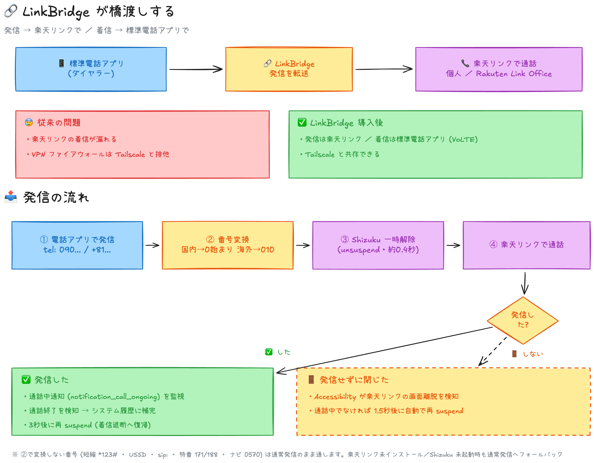
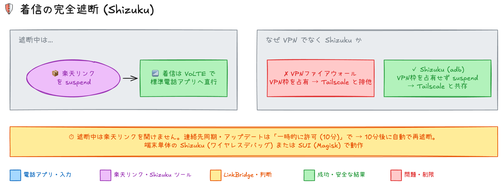

LinkBridge
ダイヤラーからかけた電話を、そのまま楽天リンクに。
番号の入力のしかたは普段どおり。発信だけが自動で楽天リンクになります。
番号の入力は普段どおり
いつもの電話アプリから入力するだけ。発信先はそのままで、通話だけ楽天リンクに引き継がれます。
緊急通報・短縮番号は安全に
110 / 119 はシステムが常に除外。ショートコードや特番などは通常発信のまま通します。
通話履歴も自動で
実際に発信できた通話だけを履歴に自動で記録。発信していないのに残る誤記録はありません。
しくみ — どこを通るか

- 電話をかけると「デフォルト通話転送アプリ」の LinkBridge が発信をうけとります
- 通常の電話番号は楽天リンクのダイヤラーを開いてそのまま発信
- 実際に発信された通話だけが通話履歴に記録されます
はじめかた — 約 3 分で設定完了
APK をインストール — 上のボタンからダウンロードし、通知またはファイルアプリから開きます。初回は「提供元不明のアプリ」の許可が必要です。
転送アプリに設定 — アプリを開いて「デフォルト通話転送アプリに設定」→ 端末の一覧で LinkBridge を選択します。
必要な権限を許可
- 通話履歴への保存 — かけた通話を履歴に残すため
- 画面の上に表示 — 楽天リンクを起動するため(バックグラウンド起動の制限を回避)
- 通知へのアクセス — 通話の開始・終了を検知するため
機種によっては設定画面から与えられない権限があり、その場合は
adbコマンドでの付与が必要です(手順は README にあります)。準備完了 — 以後、いつもの電話アプリから番号をかけるだけ。普通に電話をかける感覚のままです。
着信の完全遮断（Shizuku）
通常、着信は楽天リンクに届きます。このオプションを有効にすると楽天リンクを一時停止し、着信をキャリア網(VoLTE)から標準の電話アプリで受け取れるようになります。
VPN を使わない方式のため、Tailscale などの VPN と共存できます。
設定は Shizuku の起動 → アプリ内の「着信の完全遮断 (Shizuku)」カードで有効化です。遮断中は楽天リンクを開けないため、メッセージ確認時は一時的に許可(10分)してください。詳細は README 参照。

よくある質問
楽天リンクって何ですか?
楽天モバイルの公式通話アプリです。電話を「楽天リンク」経由でかけることで、契約のルール(無料通話範囲やデータ通信での通話など)に沿って通話できるようになります。
料金はかかりますか?
このアプリ自体は無料で使えます(個人作のアプリです)。通話料金は楽天モバイルのご契約内容に従います。
ふつうの電話アプリに戻せますか?
はい。端末の設定アプリ →「デフォルト通話転送アプリ」で LinkBridge 以外を選べば、動作を止められます。アンインストールでも元に戻ります。
緊急通報やショートコードは大丈夫ですか?
110 / 119 / 118 などはシステムが転送対象から常に除外しています。またショートコード・特番・ナビダイヤルなどは通常のまま発信されるので影響しません。
発信番号以外の情報を読み取りますか?
読み取るのは発信先の番号と、通話の開始・終了の通知だけです。連絡先・通話内容・位置情報などは扱いません。必要な権限も動作に必要な範囲のみです。
ビデオ通話や注意点は?
現バージョンではビデオ通話の区別ができず、音声通話として楽天リンクに転送されます。そのほかの既知の注意点は README にまとめています。